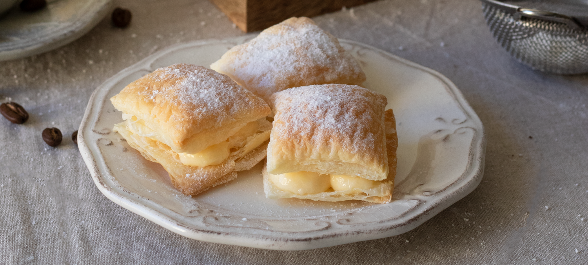
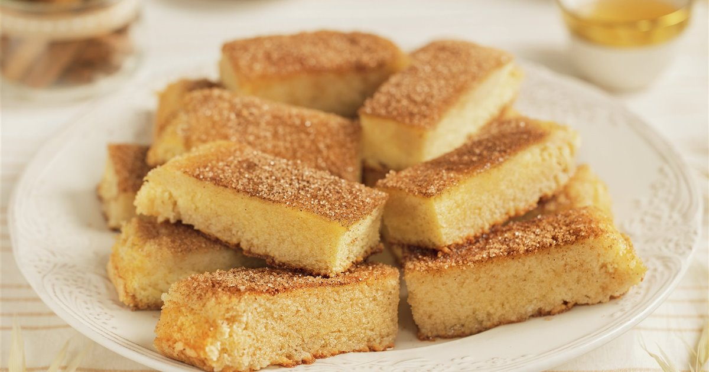
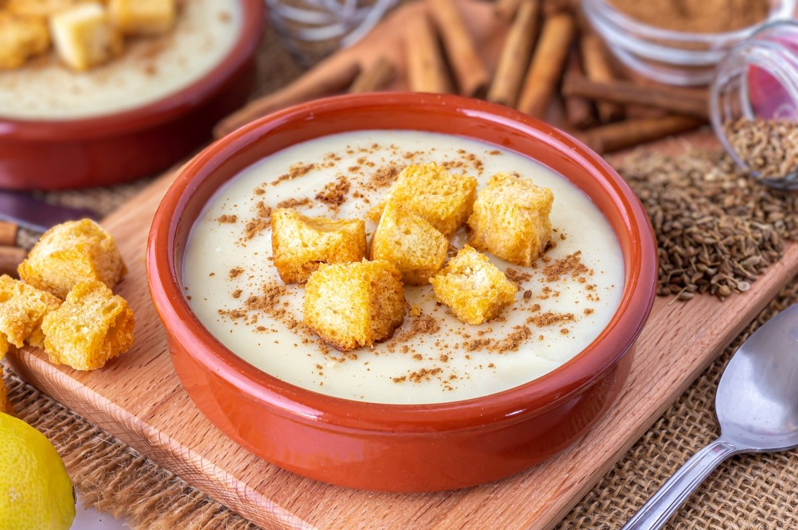
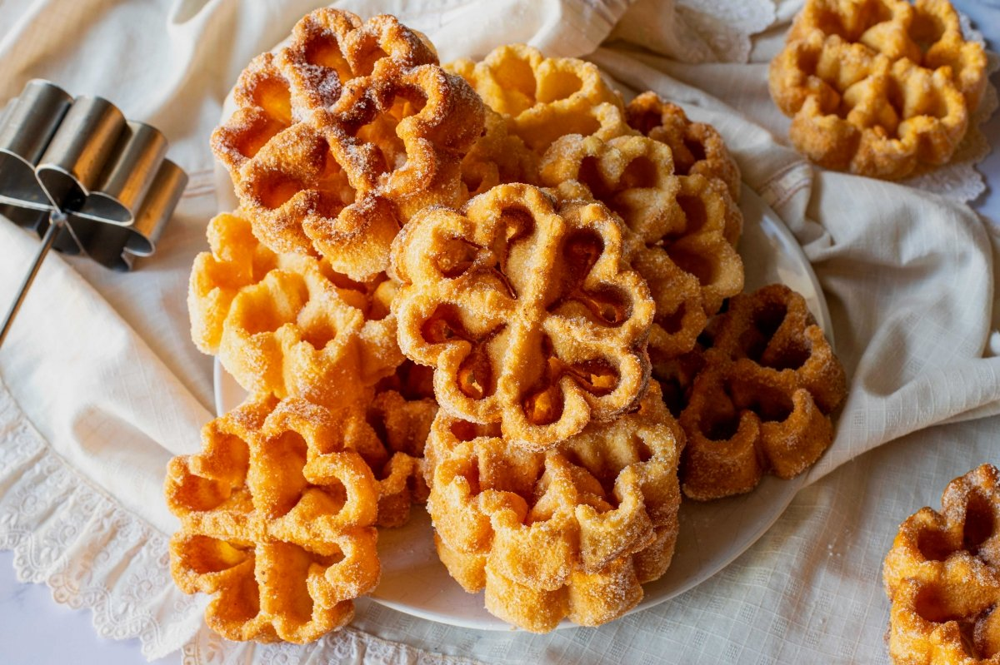
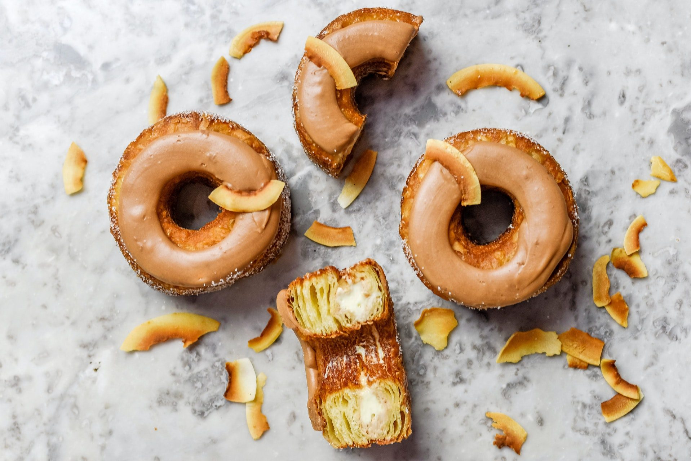
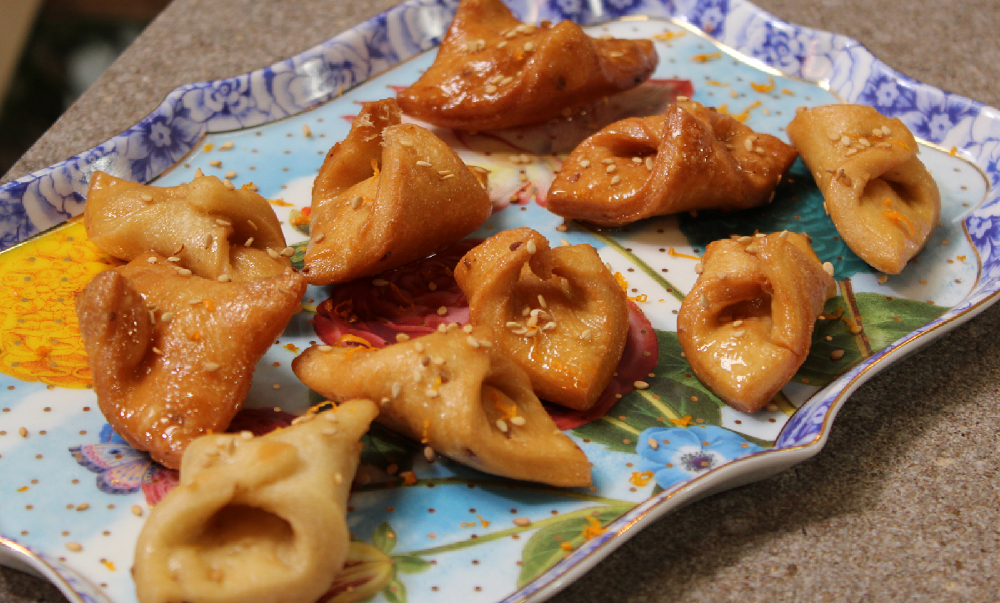
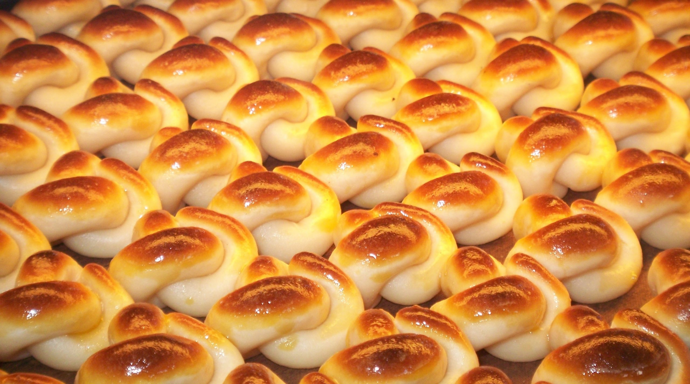
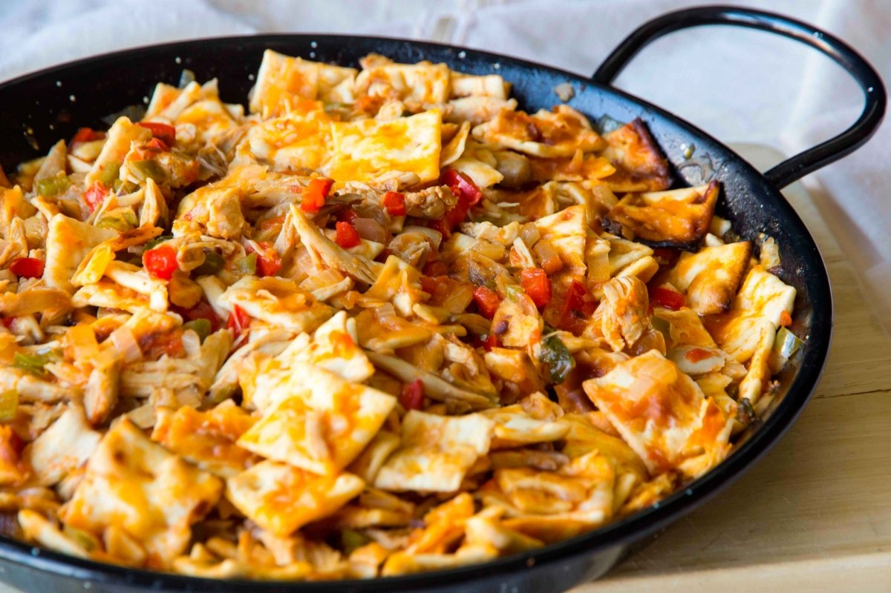

Los Dulces de Dulcinea

Miguelitos de La Roda
7,50€
(12,50€/Kilo)
Añadir a la cesta

Bizcocho Borracho
30€
17,80€
(2kg)
Añadir a la cesta

Gachas Manchegas
43,80€
21,40€
2x150grs (8 raciones)
Añadir a la cesta

Flores de carnaval
8,20€
(6 unidades)
Añadir a la cesta

Rosquillas de Alcalá
14,85€ - 18,60€
(9 unidades o 12 unidades)
Añadir a la cesta

Pestiños
3,75€
(14,99€/kilo)
Añadir a la cesta

Mazapán de Toledo
49€
26€
(1,5 kilo)
Añadir a la cesta

Gazpacho Manchego dulce
Proximamente